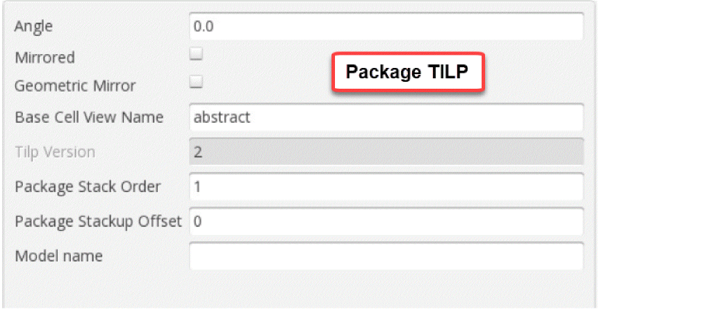

Flip Chip Parameters
The image below shows the parameters to be set when attaching a die or package TILP to the appropriate side of the substrate. Select the die instance in the package layout and right-click to view the Parameter tab of the Edit Instance Properties form.
This image shows the parameters for a package TILP.

Refer to the following illustration when choosing the parameters. A sample package stackup is shown with four layers (intervening dielectrics are not shown).
Related Topics
Dies in Virtuoso Multi-Technology Solution
Edit Instance Properties Form (Die/Package TILP Parameters)
Return to top